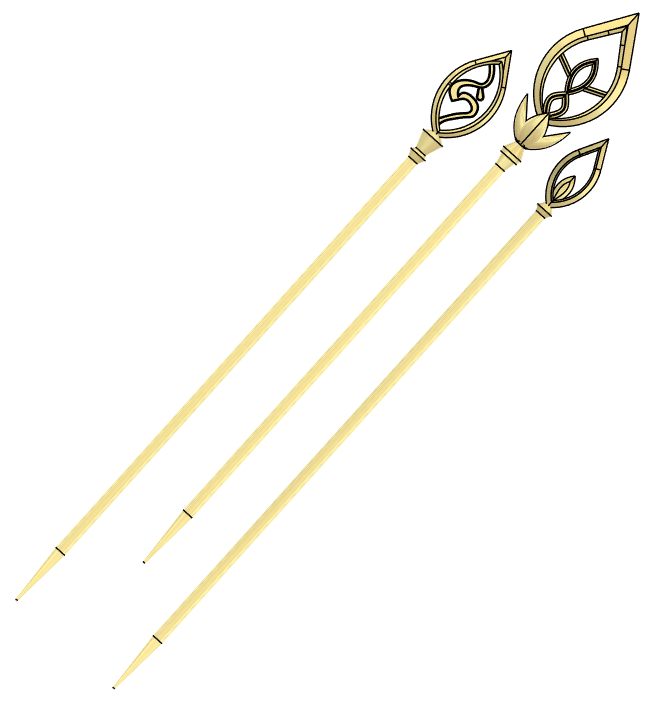
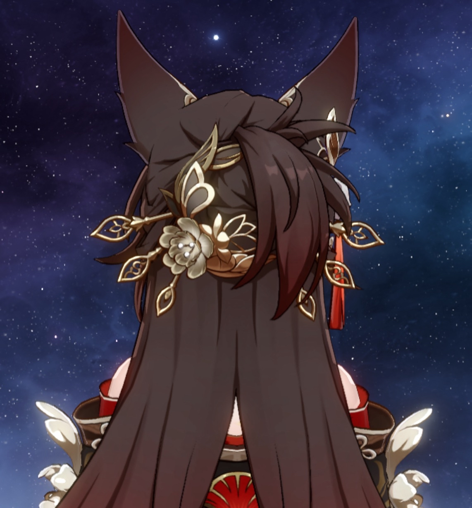

Fugue Hair Chopsticks (From Honkai: Star Rail)

Model Description
Over the summer before my senior year of high school, I visited Boston to attend MIT's BeaverWorks Summer Institute program (I took the Unmanned Aerial Systems - Synthetic Aperture Radar course, which was really fun and just a great experience into aerospace engineering!). But I spent ~1 week in my sister's lab before that, where I got bored of sitting around and made these hair chopsticks.
Below is a screenshot of the back of Fugue's in-game head.
This project is similarly structured to the Ruan Mei Hair Chopsticks that I made previously. It let me become familiar with the Circular Pattern tool on Fusion360 (through the flower that circles around the largest hair chopstick).
3D Printer Settings
This model is made to fit onto a 220x220x220mm base plate.
Here were my 3D printer settings:
3D printer: Bambu Lab A1
Slicer: BambuStudio
Filament type: PLA
Nozzle temp: 225 degrees C
Plate temp: 55 degrees C
Layer height: 0.2mm
Supports: On
Support type: tree (auto)
The rest of the settings are the default BambuStudio settings